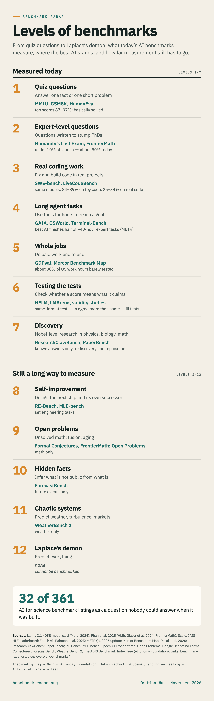

The word “benchmark” covers a 30-second quiz item and a 40-hour agent task. Which level a benchmark sits on decides what its score can claim. Below are twelve levels: the seven that today’s benchmarks reach, and the five they barely touch.

| Level | Capability | Example task | Example benchmarks | Where it stands | Source |
|---|---|---|---|---|---|
| 1 | Quiz questions | Answer one fact or one short problem | MMLU, GSM8K, HumanEval | Top scores are 87–97%: basically solved. | Llama 3.1 405B model card |
| 2 | Expert-level questions | Questions written to stump PhDs | Humanity’s Last Exam, FrontierMath | Under 10% at launch, about 50% today. | HLE v1, FrontierMath, HLE leaderboard, Epoch AI |
| 3 | Real coding work | Fix and build code in real projects | SWE-bench, LiveCodeBench | The same models score 84–89% on toy code and 25–34% on real code. | Rahman et al. 2025 |
| 4 | Long agent tasks | Use tools for hours to reach a goal | GAIA, OSWorld, Terminal-Bench | METR estimates the best AI finishes half of tasks that take an expert about 40 hours (95% interval 13 to 2,645 hours). | METR |
| 5 | Whole jobs | Do paid work end to end | GDPval, Mercor Benchmark Map | About 90% of US working hours fall on tasks with little or no benchmark coverage. | Mercor |
| 6 | Testing the tests | Check whether a score means what it claims | HELM, LMArena, validity studies | In some cases, tests that share a score format agree more than tests that claim the same skill. | Desai et al. 2026 |
| 7 | Discovery | Nobel-level research in physics, biology, math | ResearchClawBench, PaperBench | Known answers only: rediscovery and replication. | ResearchClawBench, PaperBench |
| Level | Capability | Example task | Closest benchmark today | Where it stands | Source |
|---|---|---|---|---|---|
| 8 | Self-improvement | Design the next chip and its own successor | RE-Bench, MLE-bench | Set engineering tasks. | RE-Bench, MLE-bench |
| 9 | Open problems | Unsolved math; fusion; aging | Formal Conjectures, FrontierMath: Open Problems | Math only, where a verifier can check an answer nobody knew. | Formal Conjectures, FrontierMath: Open Problems |
| 10 | Hidden facts | Infer what is not public from what is | ForecastBench | Future events only. | ForecastBench |
| 11 | Chaotic systems | Predict weather, turbulence, markets | WeatherBench 2 | Weather only. | WeatherBench 2 |
| 12 | Laplace’s demon | Predict everything | none | Cannot be benchmarked. | – |
Only 32 of 361 AI-for-science benchmark listings ask a question nobody could answer when it was built (The AI4S Benchmark Index Tree, Hejia Geng, AItonomy Foundation). If your team builds evaluations, the open space is at the top of this ladder.
Inspired by Hejia Geng @ AItonomy Foundation, Jakub Pachocki @ OpenAI, and Brian Keating’s Artificial Einstein Test. These levels first appeared in the Cohere Labs talk, slides 7 and 8.